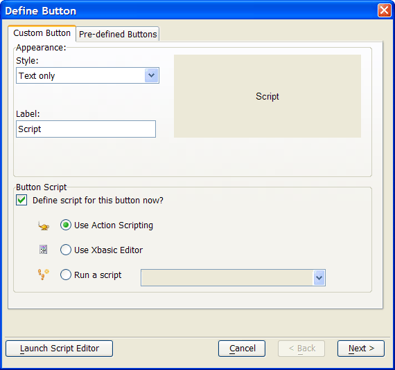
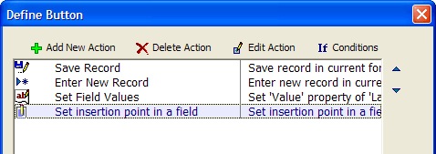

Using the Button Genie
The Button Genie lets you easily create buttons that perform single or multiple steps. For example, you can use the Action Scripting Editor to create a custom script that executes the following actions when a user clicks a button:
Saves the current record
Creates a new record
Sets a field default value
Gives focus to a field, where the user can continue entering data for the new record

Click Next to define the custom action script for the button.

For more information on creating multi-step scripts that are executed when users click a button, see Introduction to Action Scripting.
Result Variable
When you close a dialog box, the Result Variable contains the label of the button that was pressed to close the dialog.
This lets you know which button the user pressed to close the dialog.
For example, assume that your dialog has two buttons labeled "OK" and "Cancel". If the user clicks on the "OK" button, the result variable will contain "OK". If the user clicks on "Cancel", the result variable will contain "Cancel". If the user closes the dialog by clicking on the X on the title bar, the result variable will contain a null string ("").
 Note: Typically the
OK and Cancel button labels on a dialog are "&OK" and "&Cancel".
(The "&" indicates the accelerator letter). If your button
labels include the "&" character, note that the result variable
will also include this character. For example, the result variable will
contain "&OK".
Note: Typically the
OK and Cancel button labels on a dialog are "&OK" and "&Cancel".
(The "&" indicates the accelerator letter). If your button
labels include the "&" character, note that the result variable
will also include this character. For example, the result variable will
contain "&OK".
You can specify the scope of the result variable.
See Also